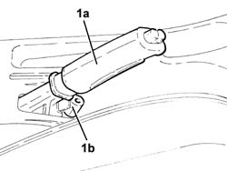
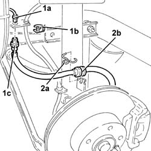
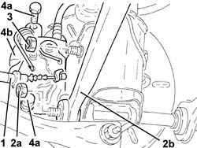
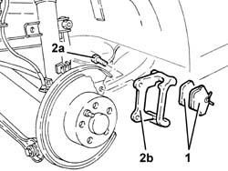
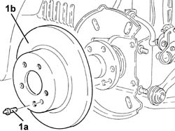
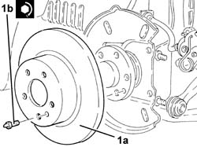
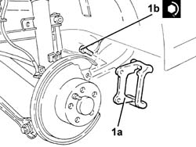
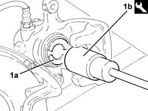
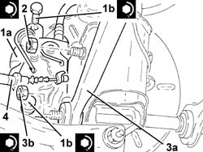

3310B14 REAR DISC BRAKES - R R - INCLUDES HANDBRAKE ADJUSTMENT
- Path
- Procedures > 33 BRAKING SYSTEM > 3310 DISC BRAKES > 3310B REAR DISC BRAKES > 3310B14 REAR DISC BRAKES - R R - INCLUDES HANDBRAKE ADJUSTMENT
- Kind
- repair procedure (removal / refitting; the operation number is the code)
- Applies to
- all engines; all production periods
- Interactive page
- https://sloeber94.github.io/elrnDB-aGt/en/#/125001323
Applies to: all engines; all production periods
 Removing
Removing
 Refitting
RefittingPosition the vehicle on the ramp
Remove the handbrake boot.
1. Lift up the handbrake lever (1a) and loosen the nut (1b) tensioning the handbrake cables.

Applies to: all engines; all production periods
Proceed with removal
Op. 4450B13 REAR WHEELS(2) R R
1. Undo the connectors (1a), remove the stops (1b) and disconnect the rear brake flexible pipes (1c) from the rigid pipes.
2. Remove the stops (2a) and release the flexible pipes (2b) from the mounting brackets.

Applies to: all engines; all production periods
1. Disconnect the handbrake cables from the rear brake calipers.
2. Undo the nuts (2a) on the bolts and move the rear suspension front trailing arms (2b) as far as necessary.
3. Undo the nuts on the top bolts securing the shock absorbers to the hub vertical links.
4. Undo the bolts (4a) and remove the rear brake calipers (4b) complete with flexible pipes.

Applies to: all engines; all production periods
1. Remove the rear brake pads.
2. Undo the bolts (2a) and remove the rear brake caliper brackets (2b).

Applies to: all engines; all production periods
1. Undo the bolts (1a) and remove the rear brake discs (1b).

Applies to: all engines; all production periods
Refitting
Removing1. Refit in their seatings the rear brake discs (1a) and secure them tightening the bolts (1b) to the specified torque.
 | Fastening | Component | Ø | Value (daNm) |
|---|---|---|---|---|
1b | Pin | FRONT BRAKE DISC. | M8 | (Wheel hub side) 1.0 ÷ 1.4 |

Applies to: all engines; all production periods
1. Place the rear brake caliper brackets (1a) back in their housings and fix them tightening the bolts (1b) to the recommended torque.
| Fastening | Component | Ø | Value (daNm) |
|---|---|---|---|---|
1b | Bolt | REAR BRAKE CALIPER BRACKET | M10 | (Rear wheel hub stub axle side.) 4.5 ÷ 5.5 |

Applies to: all engines; all production periods
1. Compress the rear brake caliper piston (1a) using the tool (1b) to facilitate the fitting of the brake caliper.
 | Name | Country |
|---|---|---|
1b | Key | 1.822.108.000 |

Applies to: all engines; all production periods
1. Refit in their seatings the rear brake calipers (1a) complete with flexible pipes and brake pads, then fix them to the mounting brackets tightening the bolts (1b) to the specified torque.
| Fastening | Component | Ø | Value (daNm) |
|---|---|---|---|---|
1b | Bolt | REAR BRAKE CALIPER | M10 | (Bracket side) 5.0 |
2. Tighten the nut on the top bolt securing the shock absorber to the hub vertical link to the specified torque.
| Fastening | Component | Ø | Value (daNm) |
|---|---|---|---|---|
2 | Bolt | REAR DAMPER | M12 | (Rear wheel hub stub axle side.) 11.1 ÷ 13.5 |
3. Refit the rear suspension rear trailing arm (3a) in its seating and fix it tightening the nut (3b) to the recommended torque.
| Fastening | Component | Ø | Value (daNm) |
|---|---|---|---|---|
3b | Bolt | REAR SUSPENSION FRONT WISHBONES | M12 | (Rear wheel hub stub axle side.) 11.1 ÷ 13.5 |
4. Connect the handbrake cable to the rear brake caliper.

Applies to: all engines; all production periods
Refit the flexible pipe on the mounting bracket and secure it with its stop.
Fit the rear brake flexible pipe in its seating on the bracket, secure it with its stop and tighten the connector to the specified torque.
| Fastening | Component | Ø | Value (daNm) |
|---|---|---|---|---|
- | Connector | HOSE TO REAR BRAKE CALIPER | M10 | (Rigid pipe side) 1.3 ÷ 1.5 |
Proceed with refitting
Op. 4450B13 REAR WHEELS(2) R R.
Adjust the travel of the handbrake lever
Op. 3380A04 HANDBRAKE - CHECK TRAVEL.
Bleed the air from the hydraulic braking system
Op. 3330A14 FRONT OR REAR HYDRAULIC BRAKE SYSTEM - BLEED.
Remove the car from the ramps.